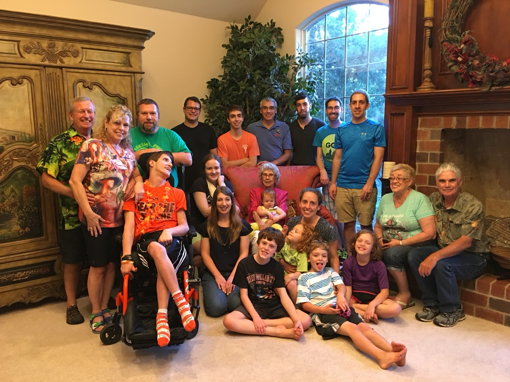
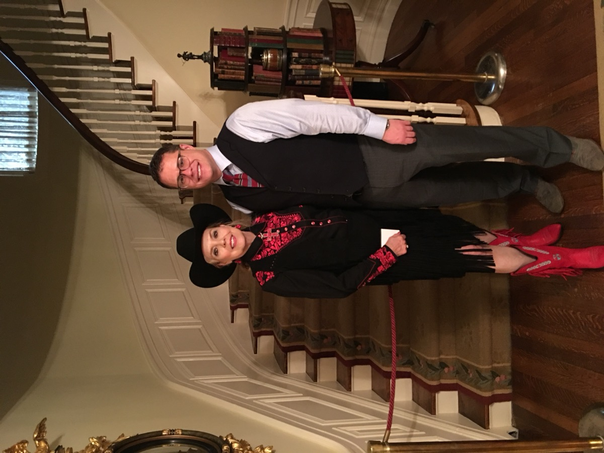
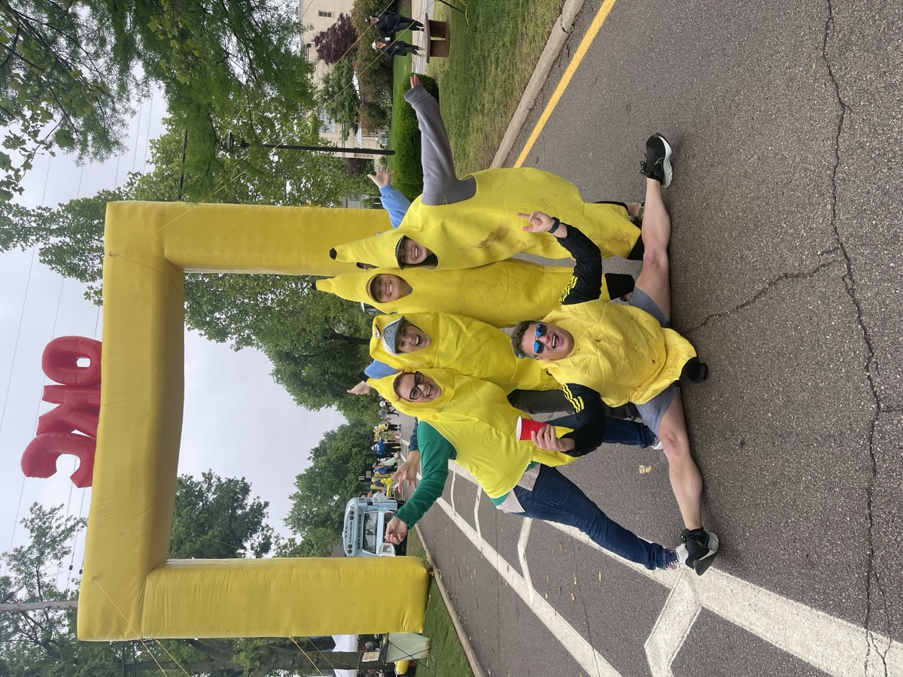
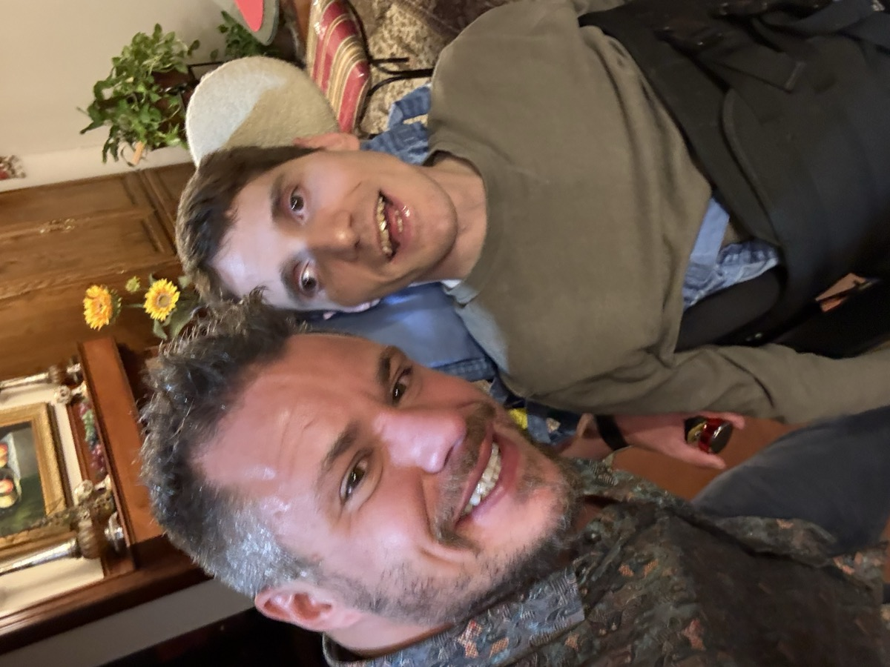
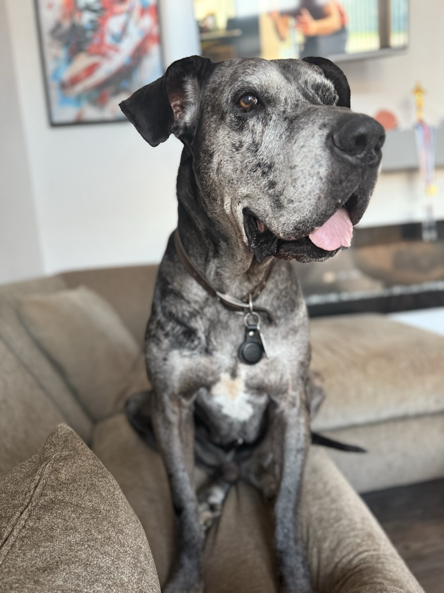
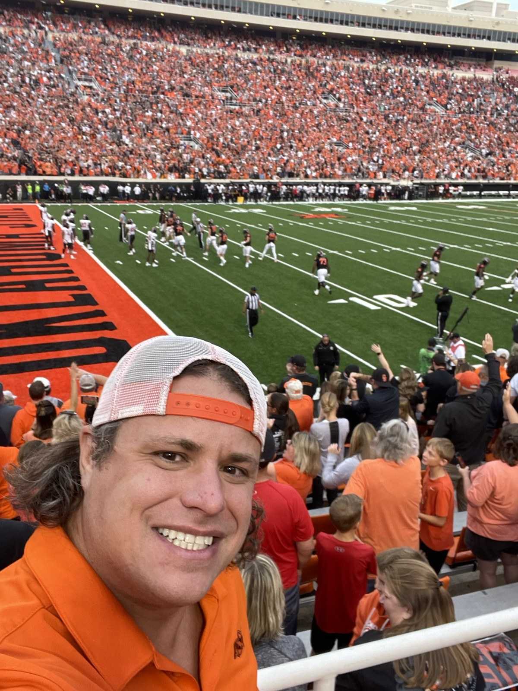
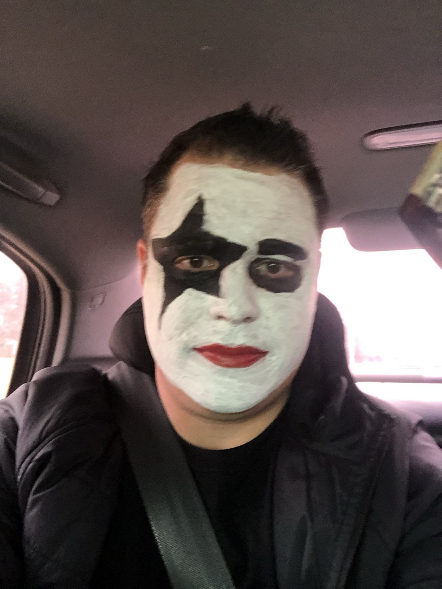
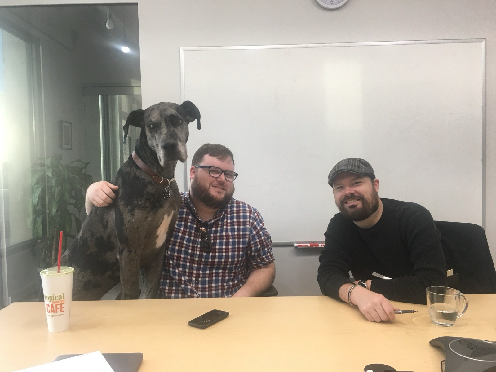

My Photos
Here are some photos of my family, my life, and people who are important to me.
Family at Christmas

My extended family at Christmas time.
StarSpace 46

StarSpace 46, the tech-focused coworking space in Oklahoma City where I'm an owner.
When I Was Younger

Me when I was younger.
With My Mom

With my mom.
The Banana Splits

Supporting a friend at the Oklahoma City Marathon. I'm doing the banana splits!
With My Brother Jason

With my brother Jason.
My Dog Sam

Sam passed away in January, but he was a big part of my life.
Another Photo with Jason

Another picture with Jason, showing our Oklahoma State pride.
OSU Game Day

Cheering on Oklahoma State at a football game.
KISS Concert

Dressed up for a KISS concert.
Sam Joins the Meeting

Sam decided to join our meeting in the conference room at work.
My Videos
These videos connect to my interests in sports and travel.
Oklahoma City Thunder
The final moments of the Thunder's 2025 NBA championship win. Video by ESPN.
Semester at Sea
A reflection on the Fall 2025 voyage from Semester at Sea's official channel. I participated in Semester at Sea on an earlier voyage.